Tengo una sorpresa
Puchale al botón jaja.
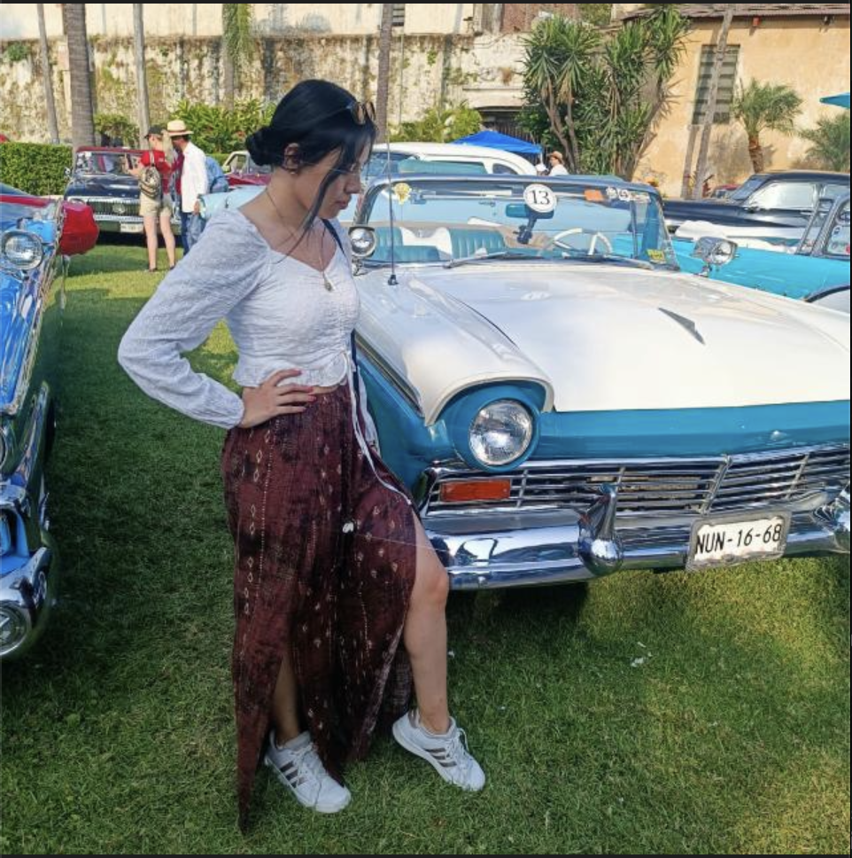
Un homenaje para la niña que sin pensar conocí en el 2013 y terminó siendo mi apoyo,consejara, lo mejor sin pensarlo.
Buenos recuerdos
Recordando la epoca en que nos conocimos, y formamos esta amistad tan memorable.
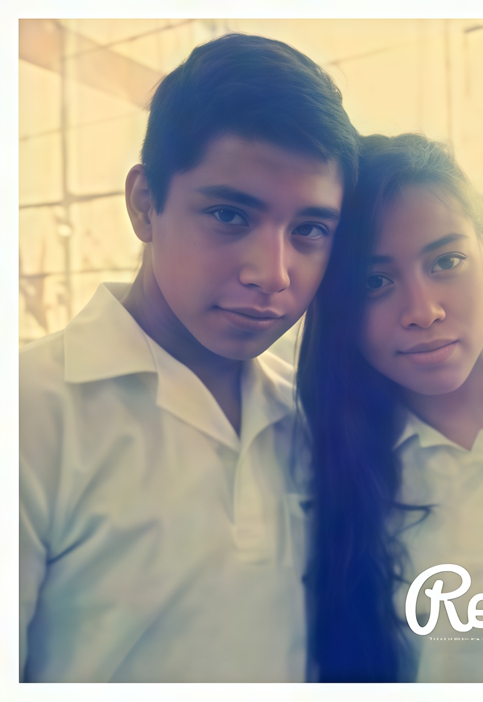
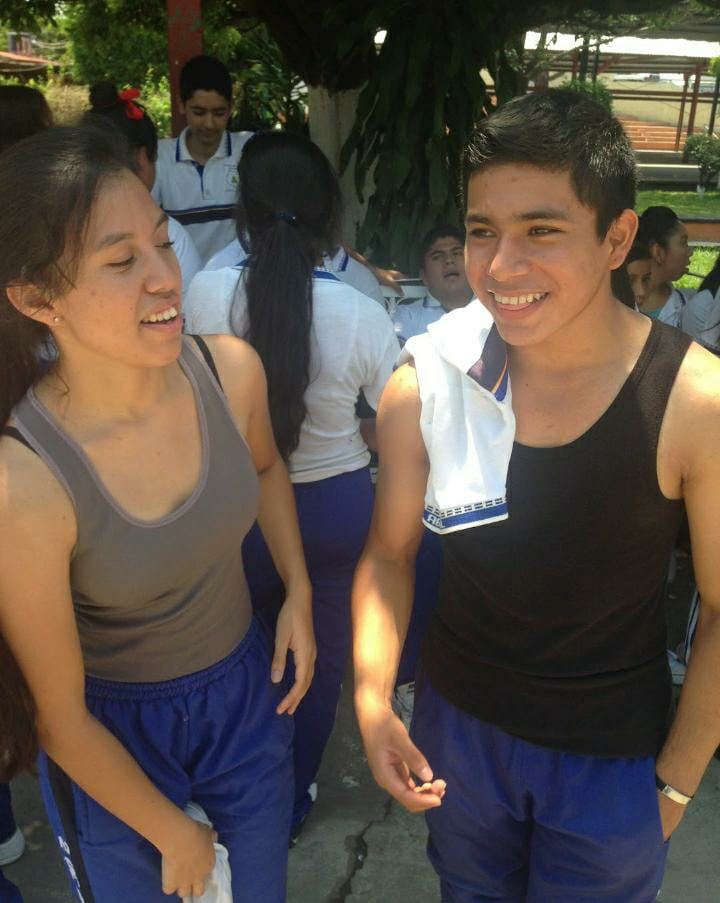
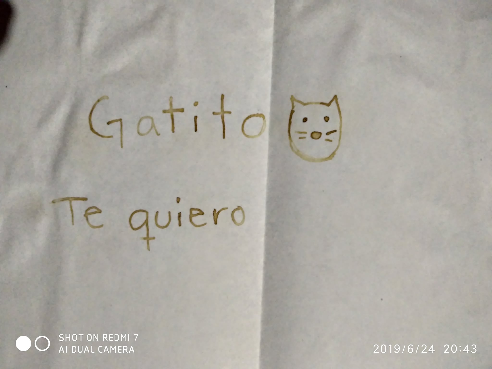
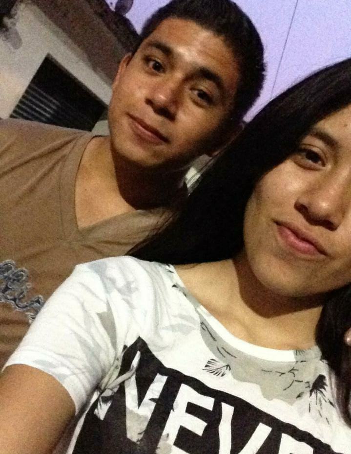
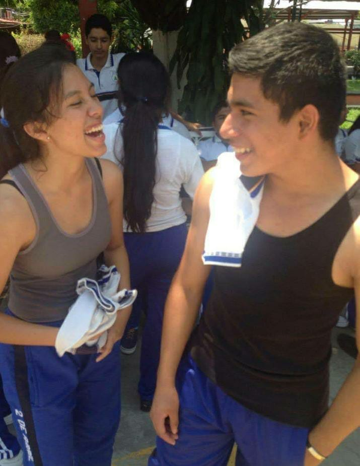
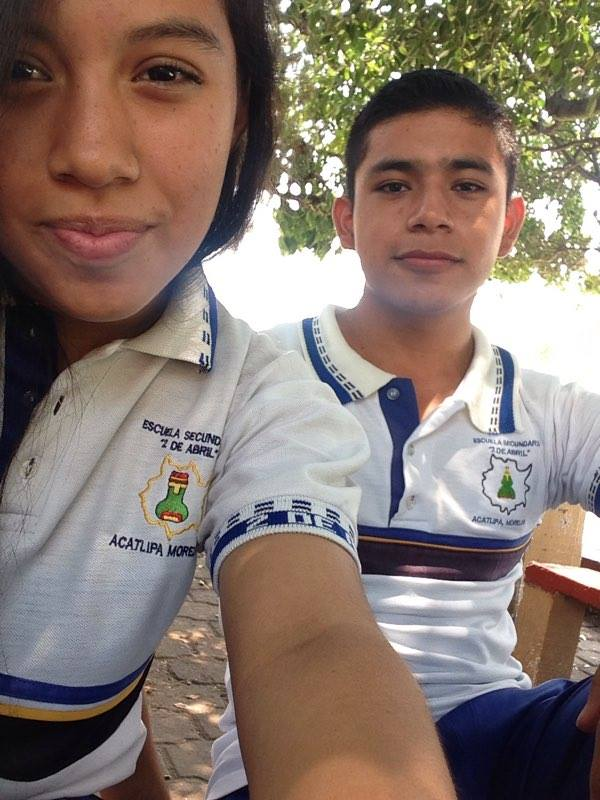
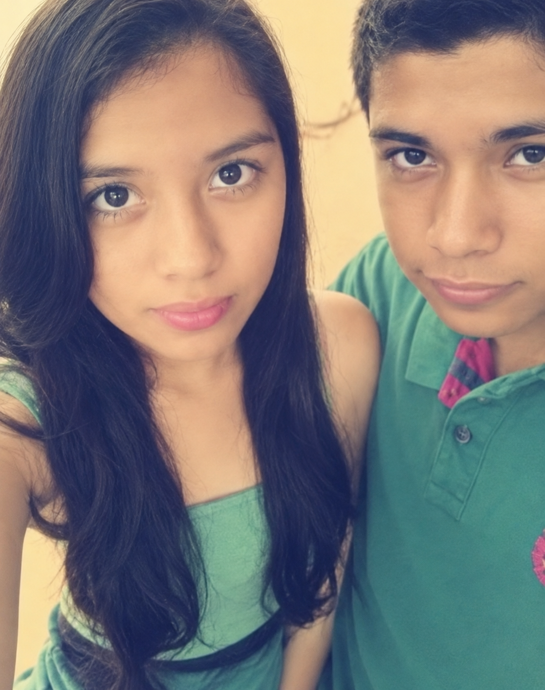
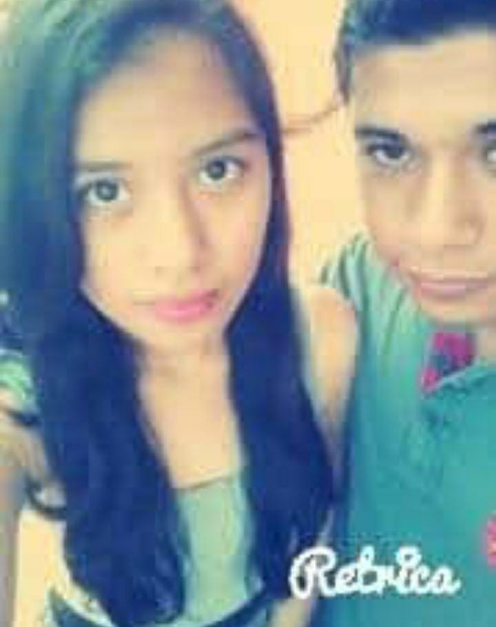
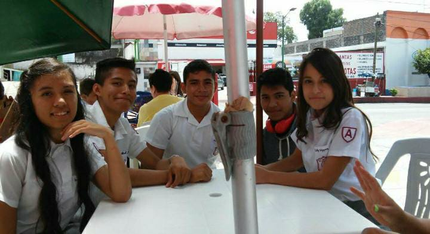
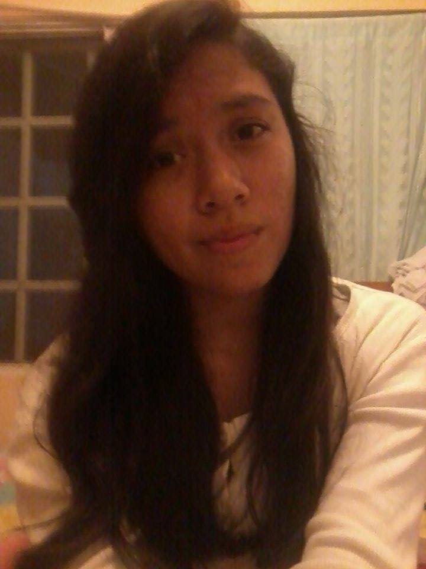
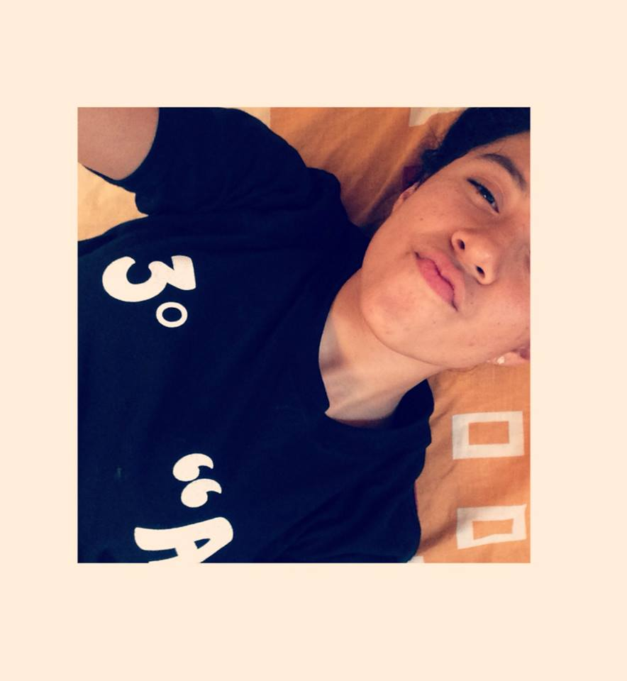
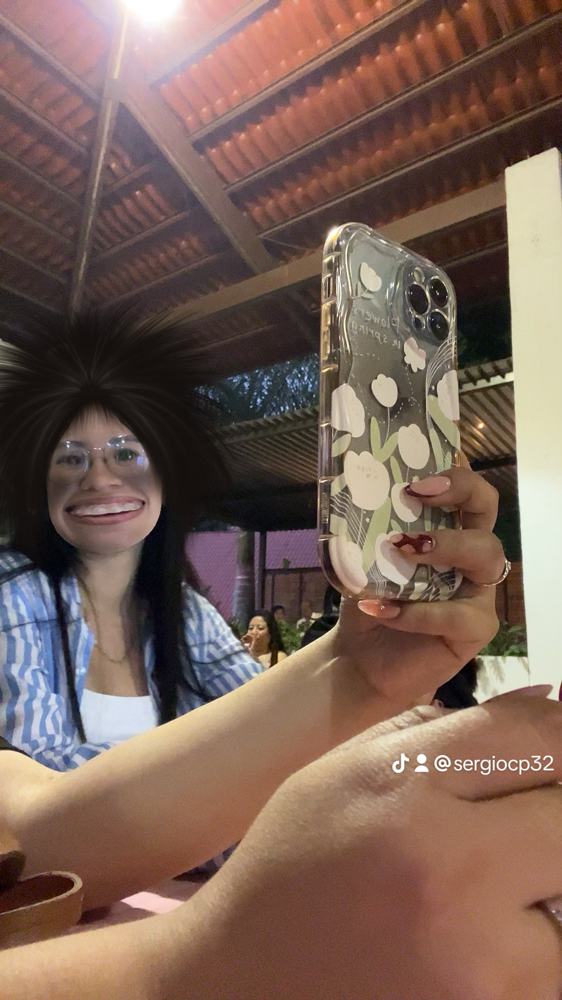
No recordaba que existian estas fotos jaja, menos la ultima, supuestamente bien guapa jaja. No has cambiado tanto amix, en cambio uno si jaja que triste
AQUÍ MI REPORTAJE JOAQUIN
Te agradezco por esta gran amistad que hemos formado a lo largo de todos estos años. Ha sido la única y verdadera amistad que ha perdurado intacta en todo este tiempo; siempre tenemos temas de qué hablar, siempre estamos para apoyarnos, darnos ánimos y encontrar maneras de afrontar y sobrellevar tantas situaciones.
Eres la mejor persona que se pueda conocer, has sido mi apoyo en todo este tiempo, quien me anima, me aconseja, quien me ayuda a pasar mis tristezas. En serio, gracias. No sé qué hubiera hecho sin tu amistad.
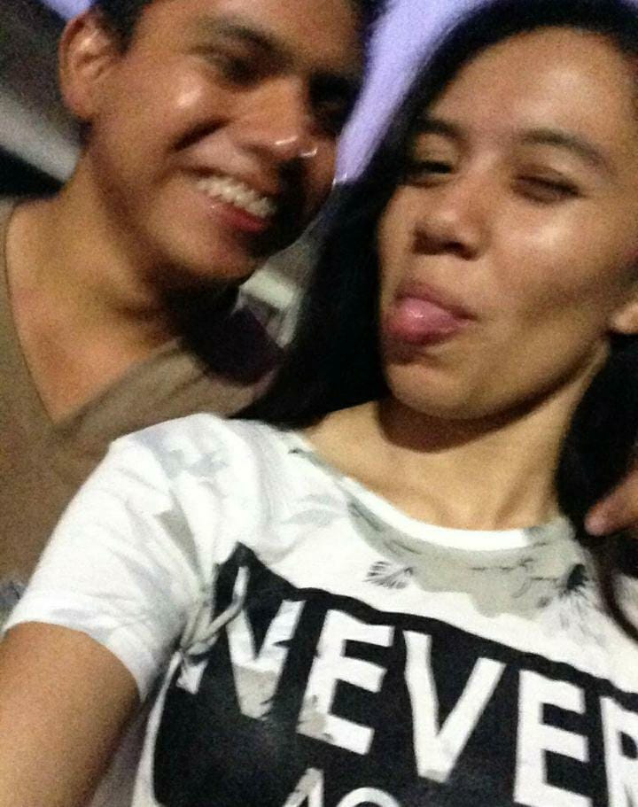
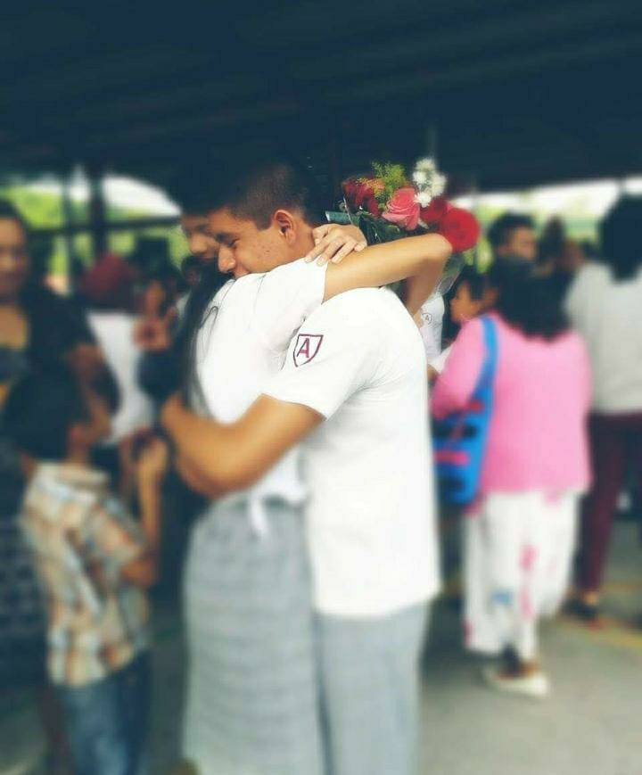
Hay personas que he conocido desde la preparatoria, con las que no coincidí realmente, y con ninguna de ellas, a la fecha, sigo teniendo relación. En ese tiempo siempre contaba sobre ti cuando preguntaban por algún tema sentimental. Aun habiendo tenido amigas, o mejor dicho compañeras, con nadie tuve confianza. Y aunque casi no hablábamos ni nos veíamos, las pocas veces que sucedía, siempre se sentía especial volver a verte, como aquella vez que te acompañé a tu casa cuando andabas en la prepa, cuando aún vivías por la iglesia, y hasta decías que ya te tronaban las rodillas y llamabas a la lluvia jaja.
Pero hay tantas cosas que pudiera escribir, aunque más que nada estoy agradecido por tener a una gran y excelente persona como amiga. Te quiero mucho, Brenda.
Que cada meta que tengas pendiente la logres paso a paso. Sé que puedes sentirte tan nostálgica, desorientada, incluso con tristeza, y perder el rumbo por ciertos momentos, pero eso no evitará que lo logres.
Quiero verte realizando lo que anhelas, que tengas el mejor éxito en todo, que seas plenamente feliz con todo lo que vayas logrando, que nadie ni nada te detenga, y, si está en mis manos, apoyarte en todo.
Gracias por siempre estar presente, en serio. No sé qué haría sin tenerte como mi mejor amiga.
Lista de honor
Cuando recurren a que escuches y obtener un buen consejo.
Eres fantástica, siempre sabes cómo apoyar.
Sé que puede ser yo, hablar cualquier tema, sin filtro.
Admiro cómo siempre sales adelante, y te esfuerzas por lograr todo.
Que este año te traiga todo lo que sueñas. Te quiero muchísimo.
Con cariño, el menso de tu amigo ete sech ♡
Por cierto
No recordaba que me corté mi cabello, cuando me comentaste que me presentarías a tu amiga “Pao”, nunca pudo concretarse esa salida para conocerla y platicar, y tal vez, tal vez comenzar una nueva historia desde 0, enmendando tantos errores, por menso, como tú ya sabes. Espero, si aún sigue en pie, poder concretarlo, amix.